Creating Maps in QGIS
Overview
What is GIS? Geographic information systems (GIS) are computer systems that produce connected visualizations of geospatial data—that is, data spatially referenced to Earth. Beyond creating visualizations, GIS is capable of capturing, storing, analyzing and managing geospatial data. (MORE INFO)
Section 1: Download QGIS and Set Up Project
Follow these steps:
- Download the latest version of QGIS: QGIS Download
Note: You do not need to download QGIS if you are on NAU computer. - Open QGIS and create a new project: 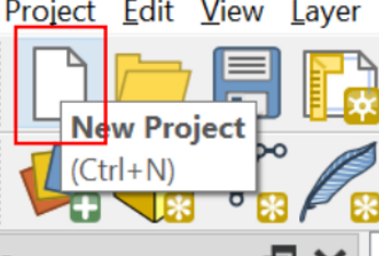
- Navigate to View > Panels and make sure that Processing Toolbox is checked in the popup to begin. 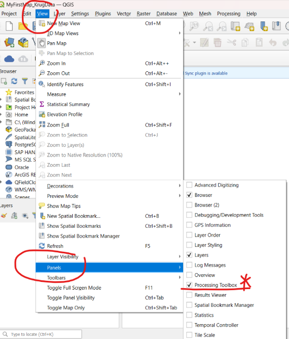
Once you create a project, you will see this page.
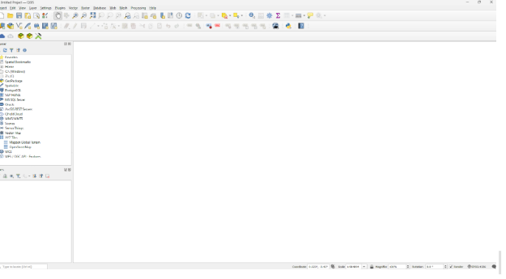Section 2: Add Data to the Map
If data format is CSV, convert CSV to points on QGIS.
To create a point layer, search for Create Points layer from Table in the Processing toolbox and double-click to open the dialogue box.
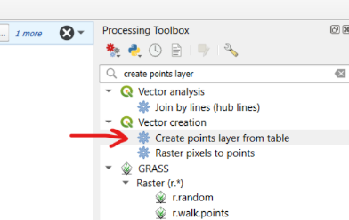In the dialogue box, click on the ellipses to the right of the wrench to Select File. Find your Excel spreadsheet file.
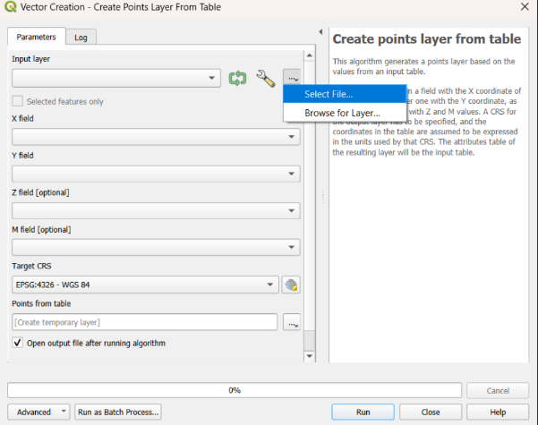Once you have added your spreadsheet data, make sure that you select the appropriate X (easting) and Y (northing) fields as indicated below. Then, click Run.
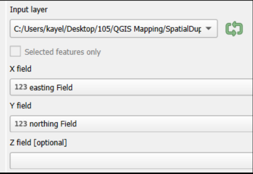Section 3: Add a Basemap
Skip part 1 if you are using NAU computer.
Part 1: Go to plugins on top menu >> Manage and install plugins
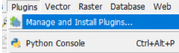- In the Plugins Window, search for QuickMapServices then click Install Plugin button. Note: if you have this plugin installed from a previous version of QGIS then it may have been updated as well 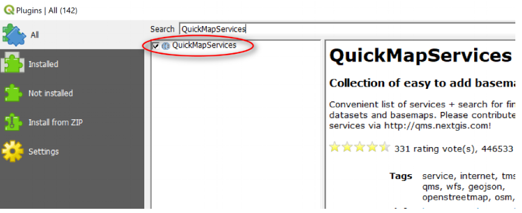
- After it installs, close the window. You should be able to find the QuickMapServices button in the Web Toolbar. 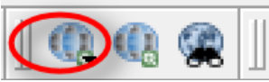
- Click on the button to get the drop down menu >> Settings. In the QuickMapServices Settings window, go to the More Services tab >> Click Get Contributed Pack to get more basemaps. Then go to the Visibility tab and turn on/off the basemaps you want to display in the menu 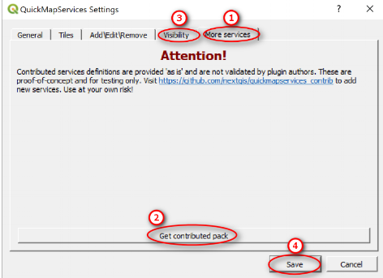
Part 2: You will find basemaps on a globe image of QuickMapServices. Click the globe icon with a plus. Add a basemap of your choice to the map.
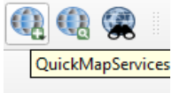Important! Make sure that the layer CRS for your newly imported points is set to EPSG:26912 or you won’t be able to see your points on the map.
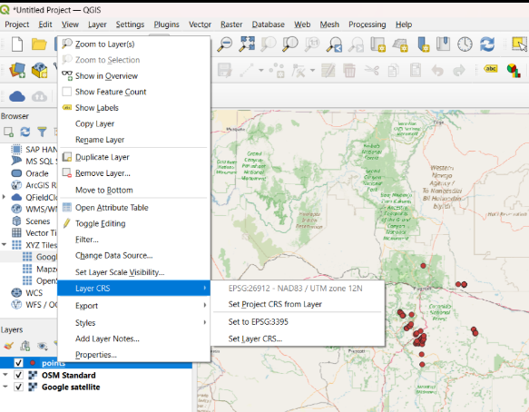